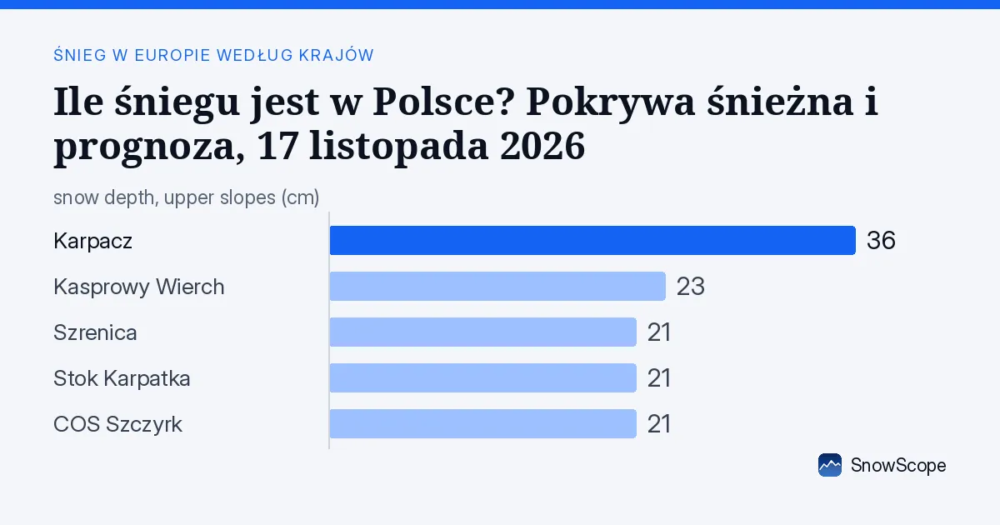

Pokrywa śnieżna w Polsce zmniejszyła się o 590 km² w siedem dni: Karpacz liderem
Polska straciła prawie połowę swojej pokrywy śnieżnej w ostatnim tygodniu, powierzchnia białego gruntu spadła z 1 300 km² do zaledwie 710 km². Karpacz w Karkonoszach ma najgłębszy śnieg na poziomie 36 cm, przedzielając trzech rywali skupionych wokół 21 cm.
Zobacz prognozę śniegu dla Karpacz w aplikacji SnowScopeGrubość śniegu, alerty i mapa 3D, za darmo.
Tydzień wycofywania się
Wycofywanie się było gwałtowne. Siedem dni temu 1 300 km² polskich tras narciarskich leżało pod śniegiem. Dziś pozostaje biały tylko 710 km²—strata 590 km² spowodowana łagodną temperaturą i topnieniem. Od wczoraj do dzisiaj tempo spadło: pokrywa śnieżna zmniejszyła się o 460 km² w ciągu jednego dnia, ale tempo się spowalnia.
Zaledwie 6% modelowanego polskiego obszaru narciarskiego ma śnieg. Trzydzieści jeden z 114 śledzonych ośrodków ma mierzalną głębokość. Linia śniegu znajduje się na wysokości 1 200 m: poniżej tego poziomu większość stoków jest naga.
| Ośrodek | Grubość śniegu | Świeży śnieg, 72 h | Najbliższe dni | Szczyt |
|---|---|---|---|---|
| Karpacz | 36 cm | 7 cm | 10 cm | 1 350 m |
| Kasprowy Wierch | 23 cm | 6 cm | 8 cm | 1 958 m |
| Szrenica | 21 cm | 6 cm | 8 cm | 1 306 m |
| Stok Karpatka | 21 cm | 5 cm | 5 cm | – |
| COS Szczyrk | 21 cm | 1 cm | 3 cm | 1 244 m |

Górskie twierdze
Śnieg utrzymuje się tylko w wysokich pasmach. Powyżej 1 500 m utrzymuje się pełna pokrywa—średnia głębokość 15 cm w tym pasie. Między 1 000 a 1 500 m śnieg pokrywa połowę stoków przy średniej 3 cm. Poniżej 1 000 m prawie nic nie pozostaje.
Tatry prowadzą na liście głębokości spośród pasm górskich, utrzymując 8 cm nowego śniegu z ostatnich 72 godzin. Karkonosze podążają tuż za nimi z 7 cm, a Beskidy pozostają w tyle z 5 cm. Te trzy pasma—wszystkie powyżej 1 200 m—to miejsca, gdzie zima nadal ma oparcie.
Karpacz wybiega na prowadzenie
Karpacz, w Karkonoszach na wysokości wierzchołka 1 350 m, teraz prowadzi Polskę z głębokością 36 cm i 7 cm świeżego śniegu z ostatnich trzech dni. Żaden inny ośrodek nie dorównuje temu rezultatowi. Kasprowy Wierch w Tatrach ma 23 cm i 6 cm świeżego śniegu. Szrenica, również na wysokości 1 306 m, ma 21 cm z tymi samymi 6 cm nowego materiału.
Trzy ośrodki dzielą pierwszą pozycję na 21 cm: Stok Karpatka, COS Szczyrk i Szrenica. Stok otrzymał 5 cm w ciągu 72 godzin, podczas gdy COS Szczyrk zyskał zaledwie 1 cm, sugerując albo cieńszą depozycję, albo większe topnienie w tej lokalizacji. Kasprowy Wierch, pomimo że jest najwyższym śledzonym ośrodkiem Polski na wysokości 1 958 m, ma mniej śniegu niż Karpacz—znak że niedawne burze faworyzowały północne Karkonosze.
Co nas czeka
Przez następne trzy dni na najwyższe punkty spadnie do 10 cm nowego śniegu. Karpacz ma prognozę zysku 10 cm do 20 listopada, Kasprowy Wierch i Szrenica po 8 cm każdy. Przez cały nadchodzący tydzień na najlepszych lokalizacjach może spaść do 12 cm.
Najśnieżniejszy dzień w prognozie to 20 listopada, kiedy spodziewane są 4 cm na faworyzowanych stokach. Ten przylot jest skromny w standardach zimowych—nie jest to reset, ale mała ulga. Bez znacznego świeżego śniegu trend wzrostowy się zatrzyma, a cykl topnienia może wznowić się, gdy sezon wkracza w koniec listopada.
Sąsiedzi
Słowacji wiedzie się lepiej. Jej udział białej pokrywy wynosi 13%, ponad dwa razy więcej niż Polsce 6%. Ski centrum Dedinky prowadzi Słowację z 42 cm—6 cm głębszym niż Karpacz—a prognoza Słowacji wskazuje na do 15 cm w nadchodzącym tygodniu. Czechy natomiast radzą sobie gorzej niż Polska: zaledwie 1% pokrywy białej, z Ramzową jako liderem na zaledwie 22 cm.
Na stokach
Wczesny śnieg sezonu jest cienki i niejednorodny. Skały i nagi grunt są prawdopodobne pod stokami poniżej 1 200 m. Skup się na wysokich Tatrach i Karkonoszach; unikaj niższych tras. Sprawdź oficjalną prognozę lawin przed wyjazdem poza trasę, szczególnie po nowym śniegu na stromych stokach. Użyj SnowScope aby zmapować które trasy mają zarejestrowaną głębokość, i oczekuj że linia śniegu będzie się przesuwać z każdą zmianą pogody w listopadzie.
Porady dla narciarzy
- Narciarz w Tatrach i Karkonoszach powyżej 1 300 m: Karpacz, Kasprowy Wierch i Szrenica mają najwięcej śniegu i jako pierwsze skorzystają z przewidywanego świeżego śniegu.
- Unikaj terenu poniżej 1 200 m do czasu po opadzie śniegu 20 listopada. Wychodnie skalne są powszechne pod cienką wczesną pokrywą.
- Obserwuj topnienie. Nawet na wysokości 1 300 m, 36 cm nie jest głębokie. Ciepłe okresy lub opady deszczu szybko zmniejszą pokrywę. Monitoruj trend codziennie.
- Sprawdź oficjalny biuletyn lawin przed jazdą poza trasę, szczególnie na stromych stokach o ekspozycji północnej po przybyciu nowego śniegu.
- Powróć do niższych ośrodków tylko gdy konsekwentny śnieg się nagromadzi i potwierdzone będą stabilne warunki. Oczekuj że trasy będą się często zamykać i otwierać.
About these numbers
Resort snow depths are the deepest snow on the resort's upper slopes from the SnowScope snow model (about 1 km, run of 17 listopada); they are estimates for an area, not a measurement at one point. Station values are measurements on the date shown. Forecasts can change. Always read the official avalanche bulletin before going off-piste.
Cite this report
For research, teaching or the press: the numbers and charts are free to reuse under CC BY 4.0 with this citation.
SnowScope (2026), Pokrywa śnieżna w Polsce zmniejszyła się o 590 km² w siedem dni: Karpacz liderem, https://snowscope.app/blog/pl/2026/11/poland-snow-report-17-november-2026.html, accessed 2026-11-17
SnowScope (Atlas Labs). (2026, November 17). Pokrywa śnieżna w Polsce zmniejszyła się o 590 km² w siedem dni: Karpacz liderem. SnowScope snow reports. https://snowscope.app/blog/pl/2026/11/poland-snow-report-17-november-2026.html
BibTeX
@misc{snowscope2026polandsnowreport17novemb,
author = {{SnowScope (Atlas Labs)}},
title = {Pokrywa śnieżna w Polsce zmniejszyła się o 590 km² w siedem dni: Karpacz liderem},
year = {2026},
month = nov,
howpublished = {\url{https://snowscope.app/blog/pl/2026/11/poland-snow-report-17-november-2026.html}},
note = {Published 2026-11-17 12:53 UTC; accessed 2026-11-17}
}· CC BY 4.0 · Methods, data and tools →
Karpacz: snow and temperature by height, this winter vs last (tools) →
Follow Karpacz
Za darmo: wiadomość, gdy nadchodzi świeży śnieg, i prognoza co rano.